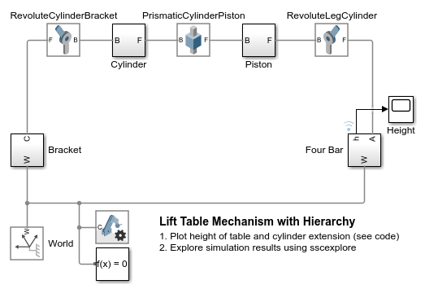
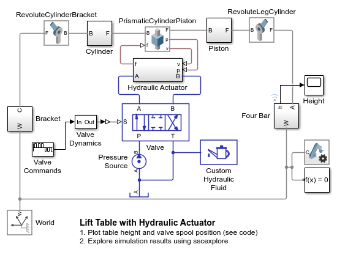
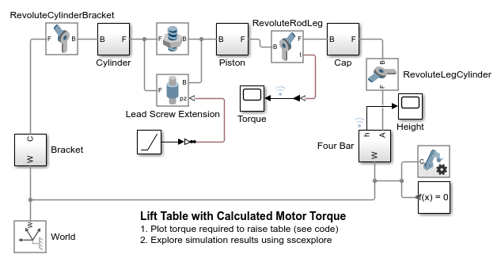
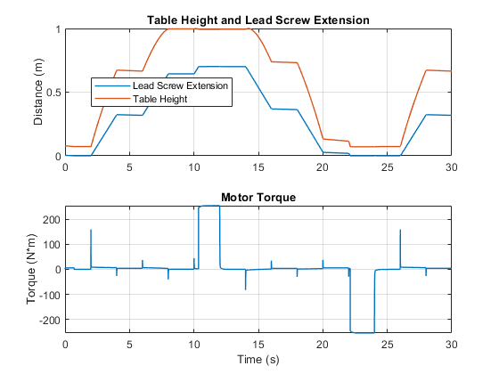

Adding Actuators to CAD Model of a Lift Table
This example shows how to extend CAD models with physical effects in Simscape Multibody. A CAD model of a lift table is imported into Simscape. Simulations are used to determine the amount of force or torque an actuator would need to provide to lift the table. Simscape models of a hydraulic cylinder and an electric lead screw are added to the model to see how the system behaves.
Simscape enables you to determine high-level actuator requirements, such as the amount of force, torque, or power an actuator must provide. Different actuation technologies can be connected to the 3-D mechanical model to see which actuators would be an option in the final design
Contents
CAD Model of Lift Table
The mechanical design of the lift table was created in Onshape View Assembly in Onshape
Screenshot of CAD Assembly in Onshape

Lift Table Model Imported from CAD
CAD models can be imported from various CAD environments. For Onshape models, use the command smexportonshape(). The model below shows what the raw imported model looks like.
Screenshot of Simscape Multibody Model

Lift Table Model With No Actuation
Once imported, you can group parts and joints within subsystems to make the the block diagram easier to read. Here, we can see the prismatic joint representing the degree of freedom that we need to actuate.
Hydraulic Actuator: Determine Required Force
To determine the force that is required to lift the table, we can prescribe the motion of the prismatic joint and the simulation will calculate how much force is needed to produce that motion.
Simulation Results from Simscape Logging
Hydraulic Actuator: Test Design
A hydraulic actuator is connected to our mechanical model. The input signal to the valve adjusts the spool position which controls flow to and from the hydraulic actuator. The actuator extends and contracts to raise and lower the table. This model allows us to determine the size of the hydraulic cylinder and the required pressures and flow rates in our system.
Simulation Results from Simscape Logging
Electric Actuator: Determine Required Torque
A leadscrew driven by an electric motor is a second method of actuation considered for our design. Replacing the prismatic joint with a lead screw and a revolute joint gives us an additional degree of freedom. We specify the rate of extension for the leadscrew, and measure the required torque to produce that motion at the revolute joint that was added. With this information, we can determine the size of our motor.
Simulation Results from Simscape Logging
Electric Actuator: Test Design
An electromechanical actuator is connected to our mechanical model. The electric motor spins the screw forward and backward to extend and contract the actuator which raises and lowers the lift table. Hard stops have been added to limit the extension of our actuator. This model allows us to select gear ratios and determine the power requirements of our motor.
Simulation Results from Simscape Logging
